철도신호기사 (2008-05-11 기출문제)
1과목: 전자공학
1. 그림과 같은 회로에서 출력 전압 Vo에 해당되는 것은?
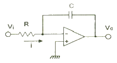
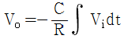
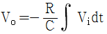
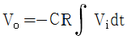
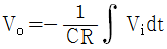
(정답률: 알수없음)

2. 그림과 같은 연산증폭기 회로의 전압증폭도는 Av? (단, R1 = 1[kΩ], R2 = 5[Ω] 이다.)
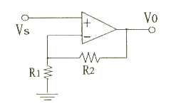
- 4
- -5
- 6
- -8
(정답률: 알수없음)
3. 수정 발진기가 어떤 임피던스 상태일 때 가장 안정한 발진을 지속하는가?
- 유도성
- 용량성
- 저항성
- 아무런 관계없음
(정답률: 알수없음)
4. 다음 중 RS 플립플롭회로의 단점을 개선한 회로?
- JK 플립플롭
- 시프트레지스터
- D 플립플롭
- 어큐물레이터
(정답률: 알수없음)
5. PN 접합시 접합의 양쪽에 어떠한 전도 전자나 정공이 존재하지 않는 영역을 무엇이라 하는가?
- 전도대
- 공핍층
- P형 반도체
- N형 반도체
(정답률: 알수없음)
6. 이미터 접지증폭기에서 β=50, Ico=0.1[mA], IB=0.2[mA] 일 때 컬렉터 전류는 몇 [mA] 인가?
- 10.6
- 13.2
- 15.1
- 18.2
(정답률: 알수없음)
7. 반도체 도전율에 대한 설명 중 옳지 않는 것?
- 온도에 따라 변화한다.
- 이동도에 비례한다.
- 캐리어 농도에 반비례한다.
- 저항율에 반비례한다.
(정답률: 알수없음)
8. 어떤 정류기의 출력 평균전압이 1000[V] 이고, 맥동률이 2[%]라고 할 때 교류전압의 실효치는 몇 [V] 인가?
- 20
- 40
- 50
- 60
(정답률: 알수없음)
9. 다음 카르노도의 간략화한 불 대수식은?
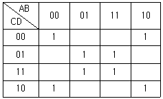
- BD
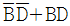
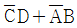
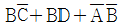
(정답률: 알수없음)
10. 다음 논리소자 중에서 전력소모가 가장 적은 것은?
- DTL
- CMOS
- ECL
- TTL
(정답률: 알수없음)
11. 낮은 임피던스의 부하에 대하여 큰 전류 이득을 얻으려 할 때 가장 적합한 증폭회로 방식은?
- 캐스코드 증폭
- 이미터 플로워
- 베이스 접지형
- 이미터 접지형
(정답률: 알수없음)
12. 상승시간(rise time)은 펄스 높이가 몇 [%] 에서 몇 [%] 까지 걸리는 시간인가?
- 0 ~ 90%
- 10 ~ 90%
- 0 ~ 100%
- 10 ~ 100%
(정답률: 알수없음)
13. 다음 중 연산증폭기에서 입력 부분의 주요 구성은?
- 전류 증폭기
- 전력 증폭기
- 임피던스 증폭기
- 차동 증폭기
(정답률: 알수없음)
14. 다음 중 멀티바이브레이터의 동작과 관계없는 것?
- 전원전압이 변동해도 발진주파수에는 큰 변화가 없다.
- 출력이 많은 고조파를 포함한다.
- 회로의 시정수로 출력파형의 주기가 결정된다.
- 부궤환이 이루어져 있는 회로이다.
(정답률: 알수없음)
15. FET 증폭회로에서 취급되지 않는 파라미터는?
- 입력저항
- 출력저항
- 전류이득
- 전압이득
(정답률: 알수없음)
16. 다음 중 아래 회로에서 발진 조건을 만족시키기 위한 것은?
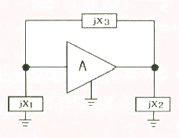
- X1 ＜ 0, X2 ＞ 0, X3 ＞ 0
- X1 ＞ 0, X2 ＞ 0, X3 ＞ 0
- X1 ＜ 0, X2 ＜ 0, X3 ＞ 0
- X1 ＞ 0, X2 ＜ 0, X3 ＜ 0
(정답률: 알수없음)
17. 다음 중 수신기에서 반송파로부터 변조신호를 분리하는 회로를 무엇이라 하는가?
- 믹서(Mixer)
- 멀티플렉서(MUX)
- 복조기(Demodulator)
- 변조기(Modulator)
(정답률: 알수없음)
18. 다음 중 송신측의 PCM 변조과정이 옳은 것?
- 양자화 → 부호화 → 표본화
- 표본화 → 양자화 → 부호화
- 표본화 → 부호화 → 양자화
- 부호화 → 양자화 → 표본화
(정답률: 알수없음)
19. FM 변조에서 변조지수가 3 이고, 신호주파수가 1000[Hz] 일 때 주파수 대역폭은 몇 [kHz] 인가?
- 8
- 10
- 12
- 14
(정답률: 알수없음)
20. 다음 중 다이오드의 작용에 속하지 않는 것?
- 검파작용
- 정류작용
- 전압저장작용
- 발광작용
(정답률: 알수없음)
2과목: 회로이론 및 제어공학
21. 그림과 같이 1개의 콘덴서와 2개의 코일이 직렬로 접속된 회로에 300[Hz]의 주파수가 공진한다고 한다. 콘덴서의 정전 용량 및 코일의 자기 인덕턴스를 각각 C=25[μF], L1=4.3[mH], L2=4.6[mH]라고 하면 코일간의 상호 인덕턴스 M 값은 약 몇 [mH] 인가? (단, 코일은 같은 방향으로 감겨져 있고, 동일 축상에 놓여져 있는 것으로 한다.)
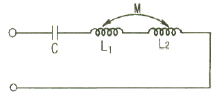
- 2.36
- 1.18
- 1.91
- 1.0
(정답률: 알수없음)
22. 대칭 3상 전압이 a상 Va, b상 Vb=a2Va, c상 Vc=aVa일 때 a 상을 기준으로 한 대칭분 전압 중 V1은 어떻게 표시되는가?
- 1/3 Va
- Va
- aVa
- a2Va
(정답률: 알수없음)
23. 그림과 같은 4단자 회로의 4단자 정수 A, B, C, D에서 C의 값은?
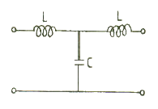
- 1-jωC
- 1-ω2LC
- jωL(2-ω2LC)
- jωC
(정답률: 알수없음)
24. 어느 함수가 f(t)=1-e-at인 것을 라플라스 변환하면?
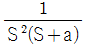
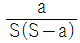
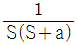
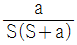
(정답률: 알수없음)
25. 저항 R, 커패시턴스 C의 병렬회로에서 전원 주파수가 변할 때의 임피던스 궤적은?
- 제1상한 내의 반직선
- 제1상한 내의 반원
- 제4상한 내의 반원
- 제4상한 내의 반직선
(정답률: 알수없음)
26. 전송 선로에서 무손실일 때, L=96[mH], C=0.6[μF]이면 특성 임피던스 [Ω]는?
- 400
- 500
- 600
- 700
(정답률: 알수없음)
27. RC저역 여파기 회로의 전달함수G(jω)에서
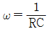
인 경우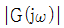
의 값은?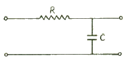
- 1
- 0.707
- 0.5
- 0
(정답률: 알수없음)
28. R=5[Ω], L=1[H]의 직렬회로에 직류 10[V]를 가할 때 순간의 전류식은?
- 5(1-e-5t)
- 2e-5t
- 5e-5t
- 2(1-e-5t)
(정답률: 알수없음)
29. V = 3+5√2 sinωt + 10√2 sin(3ωt –
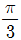
)[V]의 실효치는 몇 [V] 인가?- 12.6
- 11.5
- 10.6
- 9.6
(정답률: 알수없음)
30. 그림과 같은 순저항 회로에서 대칭 3상 전압을 가할 때 각 선에 흐르는 전류가 같으려면 R의 값은 몇 [Ω]인가?
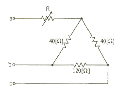
- 4
- 8
- 12
- 16
(정답률: 알수없음)
31. 전달함수
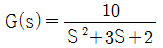
으로 표시되는 제어 계통에서 직류 이득은 얼마인가?- 1
- 2
- 3
- 5
(정답률: 알수없음)
32. 특성방정식 S2 + KS + 2K – 1 = 0인 계가 안정될 K의 범위는?
- K ＞ 0
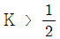
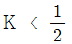
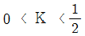
(정답률: 알수없음)
33. 어떤 제어계의 전달함수가
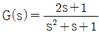
로 표시될 때, 이 계에 입력 x(t)를 가했을 경우 출력 y(t)를 구하는 미분방정식으로 알맞은 것은?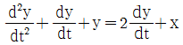
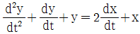
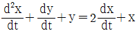
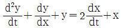
(정답률: 알수없음)
34. 특성방정식이 실수계수를 갖는 S의 유리함수일 때 근궤적은 무슨 축에 대하여 대칭인가?
- 실수측
- 허수측
- 대상축 없음
- 원점
(정답률: 알수없음)
35. 제어 목적에 의한 분류에 해당 되는 것은?
- 프로세스 제어
- 서보 기구
- 자동조정
- 비율제어
(정답률: 알수없음)
36. 샘플링된 신호를 다음 샘플링 신호와 직선으로 연결하는 홀드를 무엇이라 하는가?
- Zero Order Hold
- First Order Hold
- Second Order Hold
- Third Order Hold
(정답률: 알수없음)
37. 단위 부궤한 제어시스템(until negative feedback control system)의 개루프(open loop) 전달함수 G(s)가 다음과 같이 주어져 있다. 이 때 다음 설명 중 틀린 것은?
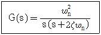
- 이 시스템은 ζ=1.2일 때 과제동된 상태에 있게 된다.
- 이 폐루프 시스템의 특성방정식은 s2+2ζωns+ωn2=0 이다.
- ζ 값이 작게 될수록 제동이 많이 걸리게 된다.
- ζ 값이 음의 값이면 불안정하게 된다.
(정답률: 알수없음)
38. 상태방정식
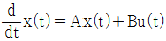
, 출력방정식 y(t)=Cx(t)에서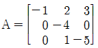
,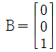
,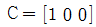
일 때 아래 설명 중 맞는 것은?- 이 시스템은 가제어(controllable)하고, 가관측(observable) 하다.
- 이 시스템은 가제어(controllable)하나, 가관측하지 않다(unobservable).
- 이 시스템은 가제어하지 않으나(uncontrollable), 가관측하다(observable).
- 이 시스템은 가제어하지 않고(uncontrollable), 가관측하지 않다(unobservable).
(정답률: 알수없음)
39. 그림과 같은 블럭 선도에서 C의 값은?
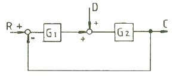
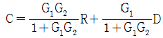
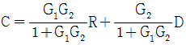
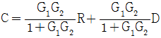
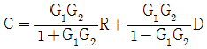
(정답률: 알수없음)
40. 다음 회로는 무엇을 나타낸 것인가?
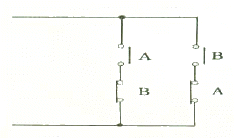
- AND
- OR
- Exclusive OR
- NAND
(정답률: 알수없음)
3과목: 신호기기
41. 다음 중에서 직류 전동기의 속도 제어법이 아닌 것은?
- 계자 제어법
- 전압 제어법
- 저항 제어법
- 2차 여자법
(정답률: 알수없음)
42. 변압기의 누설리액턴스를 줄이는데 가장 효과적인 방법은?
- 철심의 단멱적을 크게 한다.
- 코일의 단면적을 크게 한다.
- 권선을 동심 배치한다.
- 권선을 분할하여 조립한다.
(정답률: 알수없음)
43. 퍼센트 임피던스 4[%]인 변압기가 운전 중 단락 되었을 때 단락 전류는 정격 전류의 몇 배가 정도인가?
- 15
- 25
- 30
- 40
(정답률: 알수없음)
44. 직류전동기의 제동법 중 전동기를 발전기로 동작시켜 회전부가 갖는 기계적 에너지를 전기적 에너지로 변환 하여 열로 소비하는 제동방식은?
- 발전제동
- 회생제동
- 저항제동
- 직·병렬제동
(정답률: 알수없음)
45. 전기솔로전환기(NS형)에 사용되는 전동기의 기동 방식은 주로 어떤 방식이 사용되는가?
- 단상 반발기동
- 저항식 분상기동
- 기동 보상기기동
- 콘덴서 기동
(정답률: 알수없음)
46. 열차의 곡선저항을 설명한 것으로 가장 옳은 것은?
- 차륜과 제륜의 궤조간 마찰계수에 반비례한다.
- 열차의 속도에 비례하고 풍압에 비례한다.
- 궤조곡선의 곡선 반지름에 반비례한다.
- 열차의 차중과 화물량에 비례한다.
(정답률: 알수없음)
47. 건널목 경보기를 보수를 하려고 한다. 잘못된 것은?
- 201형은 발진주파수는 20kHz±2KHz이내 이다.
- 401형은 발진주파수는 40kHz±2kHz이내 이다.
- 경보등의 확인 거리는 특수한 경우 이외에는 40M 이하로 하여야 한다.
- 201형은 폐전로식이고 401형은 개전로식이다.
(정답률: 알수없음)
48. 회전자 입력 10[KW], 슬립 4[%]인 3상 유도전동기의 2차 동손은 몇 [KW] 인가?
- 9.6
- 4.0
- 1.6
- 0.4
(정답률: 알수없음)
49. 전기선로전환기의 마찰클러치에 대한 설명으로 틀린 것은?
- 전동기가 회전 또는 정지할 때 기어에 충격을 주지 않도록 흡수한다.
- 첨단에 이물질이 끼거나 쇄정간이 걸릴 때 전동기를 보호한다.
- 강하게 조정하면 전동기가 정지할 때 충격이 크고 공전할 때는 슬립 전류가 크게 된다.
- 여름에 약하게, 겨울에는 강하게 조정한다.
(정답률: 알수없음)
50. 계전기 접점의 기호결선도이다. 유극 또는 3위 계전기 접점이 아닌 것은?
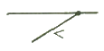
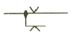
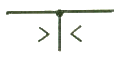
(정답률: 알수없음)
51. 정격 부하 20[A]에서 전부하 전압이 100[V], 무부하 전압 137[V] 일 때 전압 변동률[%]은?
- 10
- 17
- 28
- 37
(정답률: 알수없음)
52. 전동차단기에서 전동기의 클러치 조정은 차단봉 교체시 시행하여야 하며 전동기의 슬립전류는 몇 [A] 이하로 하여야 하는가?
- 5
- 6
- 7
- 8
(정답률: 알수없음)
53. 정거장에 진입할 열차에 대하여 정거장 안쪽으로 진입가부를 지시하는 신호기는?
- 장내 신호기
- 출발 신호기
- 폐색 신호기
- 유도 신호기
(정답률: 알수없음)
54. 부흐홀쯔(Buchholz) 계전기로 보호되는 기기?
- 변압기
- 발전기
- 동기 전동기
- 회전 변류기
(정답률: 알수없음)
55. 회전 변류기의 교류측 전압조정 방법에 속하지 않는 것은?
- 동기승압기 사용
- 유도전압 조정기 사용
- 저항 조정기 사용
- 부하시 전압조정 변압기 사용
(정답률: 알수없음)
56. 전부하에서 동손 100[W], 철손 50[W]인 변압기가 최대 효율이 나타내는 부하[%]는?
- 50
- 67
- 70
- 86
(정답률: 알수없음)
57. 사이클로 컨버터란?
- 실리콘 양방향성 소자이다.
- 제어 정류기를 사용한 주파수 변환기다.
- 직류 제어 소자이다.
- 전류 제어 소자이다.
(정답률: 알수없음)
58. 3상 유도 전동기에서 동기 와트로 표시되는 것은?
- 동기 각속도
- 2차 출력
- 1차 입력
- 토크
(정답률: 알수없음)
59. 신호용 계전기 종류에서 직류 무극 계전기의 접점수는?
- N2R2
- N4R4
- NR4
- NR6
(정답률: 알수없음)
60. 보호계전기 중 발전기, 변압기, 모선 등의 보호에 사용 되는 것은?
- 유도형 계전기
- 비율차동 계전기
- 방향단락 계전기
- 선택접지 계전기
(정답률: 알수없음)
4과목: 신호공학
61. 속도 조사식 ATS-S 지상자 설치에 대한 설명으로 옳지 않는 것은?
- 가드 레일과의 간격은 400mm 이상으로 한다.
- 지상자 밑면과 자갈과의 간격은 20mm 이상이 되도록 한다.
- 열차 진행방향으로 보아 궤간 중심으로부터 지상자 중심선과의 간격은 우측으로 300mm±10mm 이내이다.
- 레일 상면으로부터 지상자 상면까지의 높이는 20 ~ 50mm 의 범위에 설치한다.
(정답률: 알수없음)
62. 정지, 주의, 감속 및 진행신호를 현시하는 다등형신호기의 도식기호는?
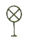
(정답률: 알수없음)
63. 출발신호기와 입환신호기를 소정의 위치에 설비할 수 없는 경우 열차 및 차량 정지표지에서 출발신호기와 입환신호기까지의 궤도회로내에 열차가 점유하고 있을 때 취급버튼을 정위로 쇄정하는 것을 무슨 쇄정이라 하는가?
- 폐로쇄정
- 철사쇄정
- 시간쇄정
- 접근쇄정
(정답률: 알수없음)
64. 궤도회로의 극성에 관한 설명으로 옳은 것은?
- 인접 궤도회로와의 사이에 콘덴서를 설치하면 궤도 계전기가 여자하므로 극성은 임의로 하여도 된다.
- 인접 궤도회로와의 사이에 궤조절연을 단락했을 때 궤도계전기가 낙하한다.
- 임펄스 궤도회로의 경우에는 궤도회로의 극성을 임의로 하여도 된다.
- 착전단 이외의 개소에는 궤도회로의 극성을 고려하지 않아도 된다.
(정답률: 알수없음)
65. 궤도회로 구성에 있어서 건널목의 401형 제어기의 회로구성은 다음 중 어느 방식으로 하는가?
- 폐전로식
- 개전로식
- 직렬식
- 병렬식
(정답률: 알수없음)
66. 그림에서 진로조사계전기의 21RZR 의 제어조건으로 옳은 것은?
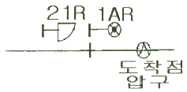
- 21RR 여자, 1ARZR 무여자, APR 여자
- 21RR 여자, 1ARZR 여자, APR 여자
- 21RR 무여자, 1ARZR 무여자, APR 무여자
- 21RR 무여자, 1ARZR 여자, APR 여자
(정답률: 알수없음)
67. 자동폐색구간에서 최소운전시격에 영향을 주는 요소가 아닌 것은?
- 열차의 제동거리
- 폐색구간의 거리
- 열차 길이
- 역간 거리
(정답률: 알수없음)
68. 운행관리시스템에서 EDP 와 CTC 에 접속되며 열차의 진로를 자동제어하는 장치는?
- DCE(Data Communication Equipment)
- PRC(Programmed Route Control)
- ATO(Automatic Train Operation)
- TWC(Train to Wayside Communication)
(정답률: 알수없음)
69. CTC(Centralized Traffic Control) 장치의 중 기능으로 볼 수 없는 것은?
- 정속도 운행 자동 제어
- 신호설비의 감시 제어
- 열차 진로의 자동 제어
- 열차 운행 상황 표시
(정답률: 알수없음)
70. 교류 NS형 전기선로 전환기의 슬립 전류가 기준치보다 작을 경우 어느 곳을 보수하여야 하는가?
- 회로제어기
- 퓨즈
- 연축마찰 클러치
- 제어계전기
(정답률: 알수없음)
71. 송전측에서 상요주파수를 1/2주파수로 변환하여 신호전류로 송전하고 송전 주파수로 착전측의 궤도 계전기에 전압을 인가하는 궤도회로 방식은?
- 정류 궤도회로
- 분주 궤도회로
- 배주 궤도회로
- 상용주파수 궤도회로
(정답률: 알수없음)
72. 열차의 차축에 의하여 궤도회로의 전원을 단락하였을 때 전원장치에 과전류가 흐르는 것을 제한하고 전압을 조정하기 위해서 설치하는 것은?
- 변성장치
- 한류장치
- 궤조절연
- 레일본드
(정답률: 알수없음)
73. 진로선별식 전기연동장치에서 전철선별계전기의 설치에 대한 설명으로 틀린 것은?
- 2개의 선로전환기가 서로 배향 쪽으로 인접하고 있어 전철선별계전기를 같이 쓰고 있을 때는 제어 조건에 양쪽의 진로선별계전기의 여자조건을 삽입한다.
- 선로전환기가 쌍동일 때는 좌행회로 또는 우행회로 어느 쪽이라도 좋으니 좌행과 우행 양 진로의 부하 전류가 균형이 되도록 설치한다.
- 정위전철선별계전기는 진로선별계전기와 병렬로 설치한다.
- 일반적으로 연동도표의 오른쪽이 상행일 때는 좌행회로에, 왼쪽이 상행일때는 우행회로에 설치한다.
(정답률: 알수없음)
74. 경부고속철도의 궤도회로 현장설비 중 궤도와 UM71 궤도회로장치의 송신기나 수신기 사이의 임피던스 정합에 사용 되는 것은?
- 동조유니트(Tuning Unit)
- 공심유도자(Air Core Inductor)
- 매칭유니트(Matching Unit)
- 보상용 콘덴서(Compensation Condenser)
(정답률: 알수없음)
75. 지상자는 경보개시 지점에 설치하는데 여객열차에 해당하는 지상자 제어거리로서 신호기로부터 경보개시 지점을 산출하는 계산식은? (단, V는 열차속도[km/h]로서 폐색구간 운행속도의 최대값을 나타낸다.)
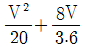
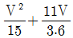
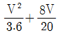
(정답률: 알수없음)
76. 진행 또는 주의 신호를 현시하기 위한 신호제어회로의 조건으로 볼 수 없는 것은?
- 진로쇄정 완료의 조건
- 진로 취급버튼을 반위로 조작할 수 있는 조건
- 진로상의 선로전환기 쇄정완료 조건
- 사구간의 절연매립전 설치 및 보완회로의 조건
(정답률: 알수없음)
77. 철도신호용 전원에 관한 설명으로 틀린 것은?
- 열차운행 중 타 분야 설비용 전원의 불안정이 신호장치에 영향을 줄 수 있으므로 독립된 전원을 사용한다.
- 신호장치는 선로상 열차 위치파악을 기본으로 하여 제어하므로 모든 전원이 차단되어도 최소한의 열차 위치 파악과 진로제어가 이루어지도록 전원을 유지 하도록 한다.
- 신호전원의 차단은 열차운전을 저해하는 등의 예측치 못한 사고를 유발 할 수 있다.
- 신호전원은 24시간 계속 부하로 신호장치의 보수와 공사를 위하여는 보수용 전동기 등을 접지와 상관없이 사용하여도 무방하다.
(정답률: 알수없음)
78. 복궤조 궤도회로의 각 레일에 전류를 측정한 결과 525A와 475A로 불평형 상태이었다. 이 궤도회로의 불평형률은 몇 % 인가?
- 3
- 5
- 7
- 10
(정답률: 알수없음)
79. 전철 제어계전기를 나타낸 기호는?
- WLR
- WR
- ZR
- KR
(정답률: 알수없음)
80. ATS(열차자동정지장치)의 동작 주체가 되는 시설 또는 설비로 다음 중 가장 적합한 것은?
- 선로전환기장치
- 입환표지
- 장내, 폐색 신호기
- 전자연동장치
(정답률: 알수없음)